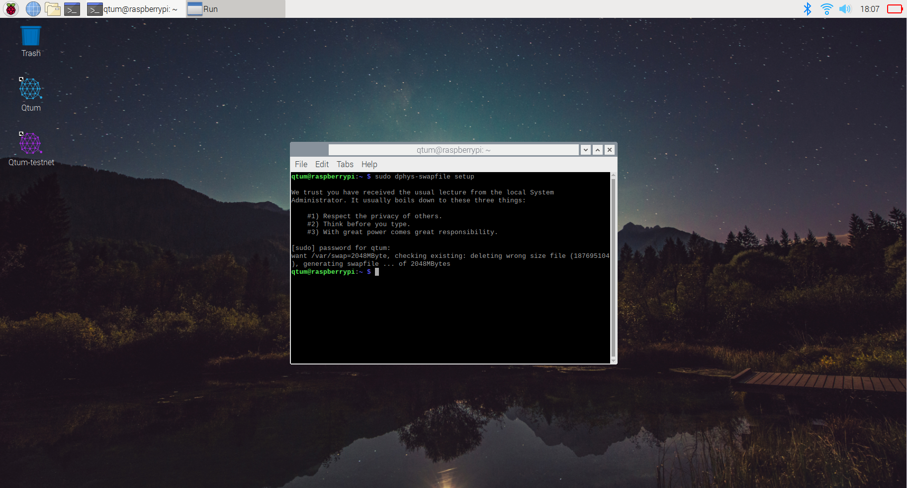
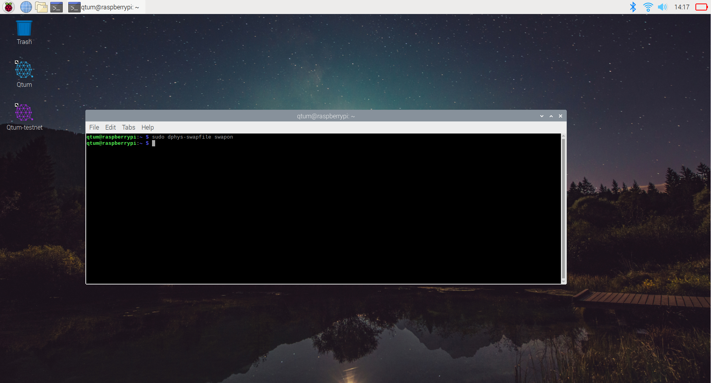
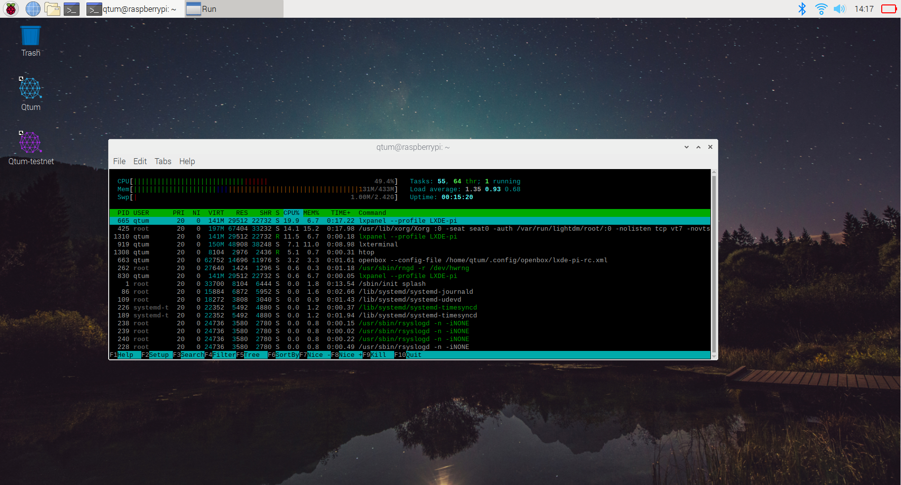
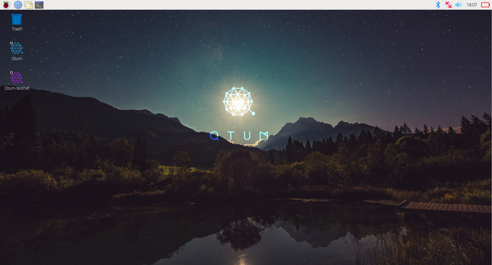
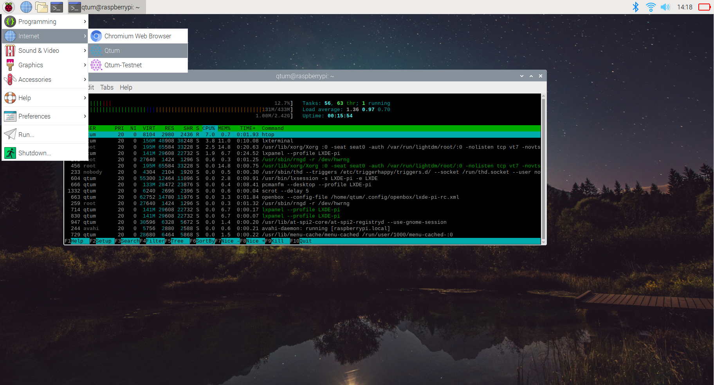
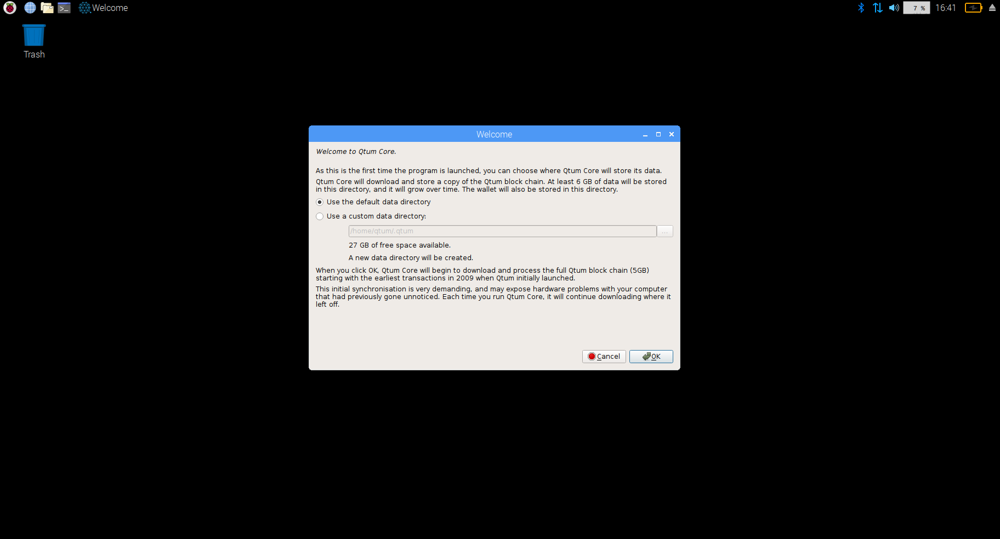
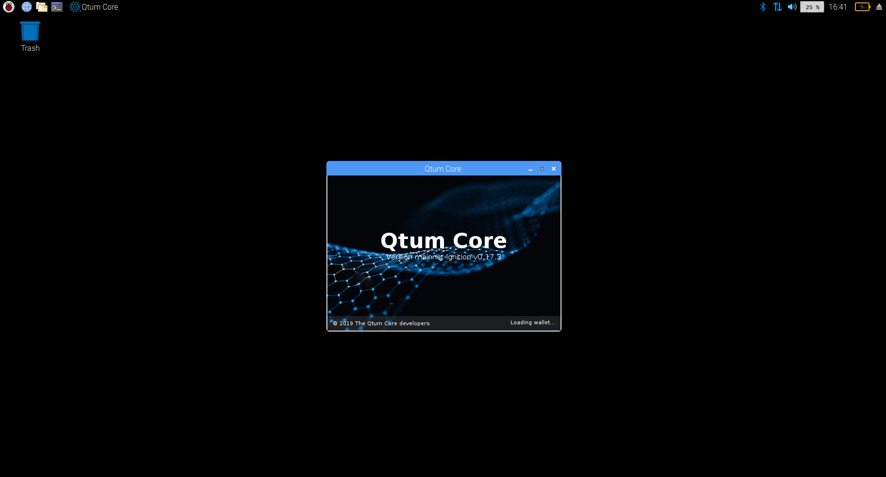
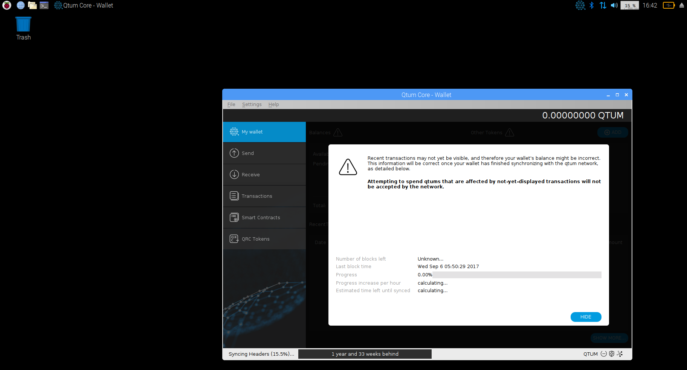
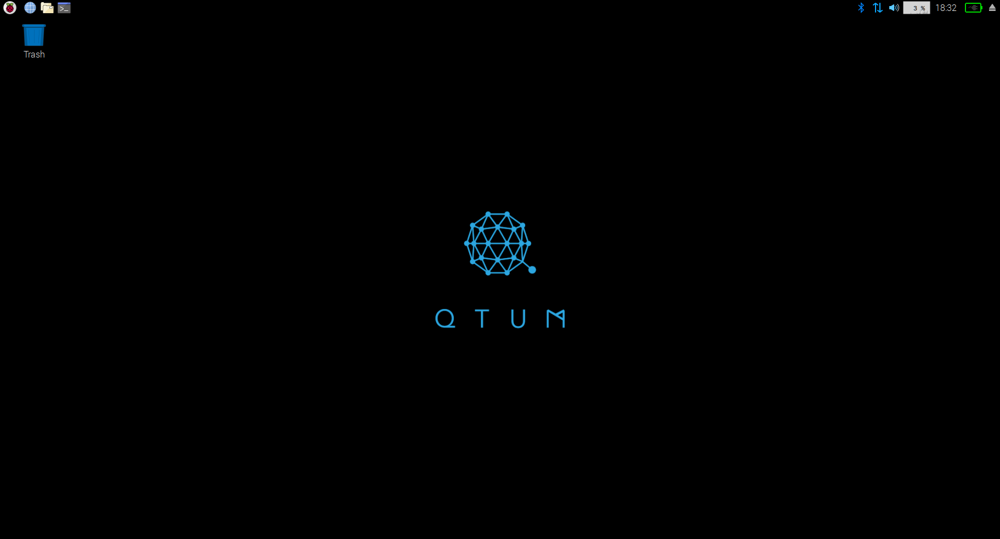

Evo on Raspberry Pi
- Getting a Stakebox
- Downloading Evo Raspbian
- Screenshots of Evo Raspbian
- Installing Evo via Evo Raspbian repository (only needed if you're not using a Evo stakebox or not using the Evo Raspbian image)
- Raspberry Pi Zero
- Setting up a firewall in Raspbian
- Launching Evo daemon
- Encrypting wallet
- Staking
- Backup
- Editing Configuration File
Getting a Stakebox
There's several ways to run Evo on a Raspberry Pi, perhaps the easiest way is to just get a Evo Stakebox, you can order from here:
https://www.stakebox.org/products/evo-stakebox
Downloading Evo Raspbian
If you don't want to buy or already own a stakebox and just want to get the latest version of Raspbian with Evo preinstalled with the official Evo Repository, then you can download the Raspbian images yourself:
PLEASE NOTE if you're running a previous release of Evo-Raspbian or have installed Evo through the Repository. All you need to do to update your Evo wallet is type in a terminal the following:
sudo apt update && sudo apt -y upgrade
New Evo Raspbian Release!
Changelog:
- Upgrade to Debian Buster 10.3 release
- Evo 0.19.0.1
- New Desktop UI for Evo Wallet
Evo Raspbian 64bit (Recommended from Raspberry Pi 2 - Raspberry Pi 4)
https://raspbianimages.s3.amazonaws.com/2020-02-23-Evo-Raspbian.zip
https://raspbianimages.s3.amazonaws.com/2020-02-23-Evo-Raspbian-lite.zip
"Burning" the Evo Raspbian image to your SD card
Please watch this video tutorial which shows how to download, burn and use your Evo Raspbian image
https://www.youtube.com/watch?v=0W6NlIk7Tgw&t=0s
Raspberry Pi Zero
Evo Raspbian now supports the Pi Zero!. This is a $5 device which has only 512mb of Ram and a 1 Core CPU. This makes the Pi Zero the most cost-effective solution to have a Evo staking box!
The process of installing Evo Raspbian on the Pi Zero is the same as on the other Raspberry Pis, however, this version is recommended for the Zero"
Evo PiZero (Recommended for Raspberry Pi 1 and Pi Zero)
https://raspbianimages.s3.amazonaws.com/2019-09-26-Evo-Raspbian-PiZero.zip
https://raspbianimages.s3.amazonaws.com/2019-09-26-Evo-Raspbian-PiZero-lite.zip
The Desktop version works and is usable with the Pi Zero, but, you will find better performance with the "Lite" version as it doesn't have a desktop, only command line.
Pi Zero RAM restrictions
The Pi Zero has only 512MB ram, and a portion of that ram is "shared" with the video output, that gives you just a bit below 500MB ram. Evo Raspbian has ZRAM enabled by default, this compresses your RAM to allow it to use more data, however, to ensure stability, you need to enable SWAP.
What is SWAP anyway?
SWAP enables "virtual memory", it uses a portion of your disk to store data that cannot be stored in RAM, this helps devices like the Pi Zero to continue running without crashing even if the applications are using more than the 512MB RAM included with the Pi Zero.
How do we enable SWAP?
Enabling SWAP on the Pi Zero is extremely easy:
Open up a terminal as shown on the screenshot below

Inside the terminal, type "sudo dphys-swapfile setup" and press enter
You'll see some text coming up, and a confirmation of your 2gb SWAP file being generated.
Still inside the same terminal, type "sudo dphys-swapfile swapon" and press enter This won't give you any confirmation, however, your SWAP file has been setup and activated!. You only need to do this once, the Pi Will activate your SWAP file in case of a reboot/shutdown.

Here we can see that the SWAP file is active giving us a total of 2.42GB of RAM (SWAP and ZRAM included)

IMPORTANT NOTE!
Evo raspbian default user is evo and default password is evo1234. You will need to enter these on first login and you will be asked by the login system to change your password immediately, please make sure to use a strong password!
Screenshots of Evo Raspbian

In order to launch Evo, we need to go to the menu and go to internet -> Evo

Once you click on it, you'll see the following screen mentioning some details regarding disk usage and disk space available on your raspberry pi.

After clicking ok, your Raspberry Pi will begin syncing!

Syncing on your raspberry can take anything from a couple of hours to a day, please be patient.

The Evo raspbian image has also some cool wallpapers to choose from:

Installing Evo via Evo Raspbian repository
If you're using a "normal" raspbian install, you can add the Evo repository to install Evo and keep with updates easily!
Install dirmngr & apt-transport https
sudo apt install -y dirmngr apt-transport-https
Add evo public key
sudo apt-key adv --keyserver keyserver.ubuntu.com --recv-keys BF5B197D
Adding repository to your APT sourcess
sudo su - Sudo to root first
echo "deb https://repo.coinevo.tech/apt/raspbian/ jessie main" >> /etc/apt/sources.list
or
echo "deb https://repo.coinevo.tech/apt/raspbian/ stretch main" >> /etc/apt/sources.list
This will add the repository to your APT sources file.
Refreshing APT sources and installing Evo
sudo apt update && sudo apt install evo
By doing this, we'll update our sources and install Evo on our raspberry Box, which can act now as a staking server/node.
Changing default password
PLEASE NOTE: you will only really need to do this if you're using a "clean" raspbian image; you won't need to do this if you're using a Stakebox or the official Evo Raspbian
This option is recommended for security reasons, the default password on the pi is well known, it's highly recommended to change it upon first login.
To change just type: passwd
The prompt will ask you to write and repeat the new password to confirm.
Protecting access with a basic firewall
Well, our raspberry is only for staking, there's no need to have all those ports open, let's close everything we don't need and only allow access to necesary services.
First, let's install UFW (uncomplicated firewall) which is an easy-to-use interface for iptables
sudo apt install ufw
Once this is installed, we proceed with access permissions, we will define which ports will be accessible. Let's check first what's open:
sudo ufw status This should show something like this:
Status: active
To Action From
-- ------ ----
22 ALLOW Anywhere
Ok so it's time to start closing down access, type the following:
sudo ufw default deny incoming
sudo ufw allow 3888/tcp
Here we've defined the basics, closing down everything except port 3888 and 3889 which are used by Evo to function.
If you're using SSH, it's recommended to only allow access from local network.
sudo ufw allow from 196.168.0.0/24 to any port 22
Binaries available on Raspberry Pi
- evod
- evo-cli
- evo-qt
- evo-tx
Launching Evo daemon
All we need to do to launch the Evo daemon is type:
evod -daemon
As soon as you type this, the wallet will create the wallet.dat file among other files (if they’re not already there). The wallet will run and begin syncing instantly from the other Blockchain nodes, this can take a few hours to complete so you can go ahead and have some coffee and let it synchronize.
Launching Evo-Qt
If you're using Raspberry Pi desktop interface, all you need to do is navigate to the applications menu->other->evo-qt
Encrypting wallet
We can encrypt the wallet at any time, it's better to do it before we go any further.
To do this, type the following on the command line:
evo-cli encryptwallet yourpassword
This will encrypt the wallet which in turn closes the daemon, you'll see the following message:
wallet encrypted; Evo server stopping, restart to run with encrypted wallet. If you alreadby backed up before encrypting, you need to make a new backup.
evo-cli getaccountaddress "" -> Right after launching the daemon, you can obtain your wallet address by typing this.
You can send Evo coins to the address we just obtained from the daemon, please remember that those transactions require at least 500+ confirmations before they become mature enough for staking.
Staking
Now that we've waited until we have at least 501 confirmations on our received transaction, we are elligible for staking, however, if our wallet is encrypted (which we did for security reasons) we won't be able to stake, let's open our wallet for staking using the command line!.
evo-cli walletpassphrase password 999999999 true
The above command will unlock the walet for 31.6 Years! that should be enough for now. Please note, this will not unlock your backup, only the wallet that's running right now.
Now that we've unlocked our wallet, we need to wait until we have more than 501 confirmations to be elligible for staking, if we already do, it's a matter of time which will vary depending on the network weight vs your wallet's weight.
Checking Balance
To check your balance, type evo-cli getinfo this will show general information, including your available balance and balance in staking
Check transactions
To check your transactions (incoming and outgoing) type evo-cli listtransactions
Check staking info
To check Evo's staking information, type evo-cli getstakinginfo
Staking tips
Staking really depends on network weight vs your wallet’s weight which is based on the amount of coins you have, higher weight increases your chances of staking a block.
If you have a large amount of coins, it’s a good idea to split those up in separate transactions, for instance, if you have 10.000 EVO, it’s better to send 10 transactions of 1000 EVO each to your wallet, each one generates a UTXO input which will take part in staking. This optimizes the staking process and works much better than just one large 10.000 EVO input.
If you want to split your coins into different addresses inside your Rasbperry Pi wallet, type the following to obtain new addresses inside your wallet: evo-cli getnewaddress Each time you type this, you’ll get a new address, EVO can generate any amount of addresses you want, but please keep in mind, if you do go over 100 new address, you might want to make a new backup of your wallet.
Updating wallet
We’re always launching new updates, sometimes it’s to add new features or fix bugs. In any case, updating is a breeze, all you have to do is type
sudo apt update && sudo apt upgrade -y
How to backup to a separate device
Making a backup in Raspberry is simple, you only need to copy the wallet.dat file, but how do you export this to another device?
First, we'll download Filezilla, which is an easy to use and secure FTP/SFTP server

Installing is just like any other windows app.

When the installer finishes, we launch Filezilla and are greeted with this screen, let's proceed and add our previously created ssh-key
We go into Edit -> Settings -> SFTP. This will give us the following screen in which we will be able to import our SSH key.

Please note that Filezilla only accepts the private key which is created when the ssh-key was generated.
 Here we've already added the ssh key, now we can log into our server
Here we've already added the ssh key, now we can log into our server

we enter our Raspberry Pi ip address + username (root in this case), leave a blank password because we're using ssh-key to login 
Just press ok when prompted, and you'll be able to log in. 

Here we can see the /root/ folder of our Raspberry Pi, this is where our wallet runs and has the wallet stored in /root/.evo we can go ahead and double click the folder which will show us the following: 
Now all we need to do is scroll down to wallet.dat, right click and select download from the list. This will download the wallet.dat file to our computer, we've successfully backed up our Evo wallet!.
Editing Configuration File
How to edit the evo.conf configuration file.
Launch Terminal.
Change directories to the Evo data directory:
cd .evo(location home/pi/.evo for Linux install) orcd /home/evo/.evo(default location for image install)Launch the editor, opening an existing or making a new configuration file:
sudo nano evo.confEdit configuration file, for example, enter
uacomment=Your_Evo_Address addnode=evo5.dynu.net
Press Control-O to write the file.
For “File name to write: evo.conf” press Enter.
Press Control-X to exit the editor.
Restart your Evo Core wallet to load the new configuration file.
Check the new settings. For Evo-Qt use Window – Information and check for your address in "User Agent":

For evod use the command getnetworkinfo and check for your address in "subversion":